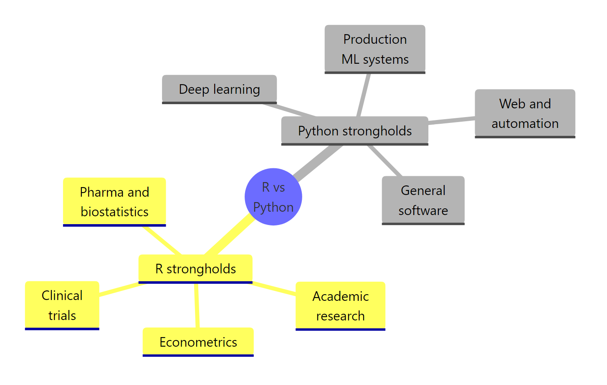
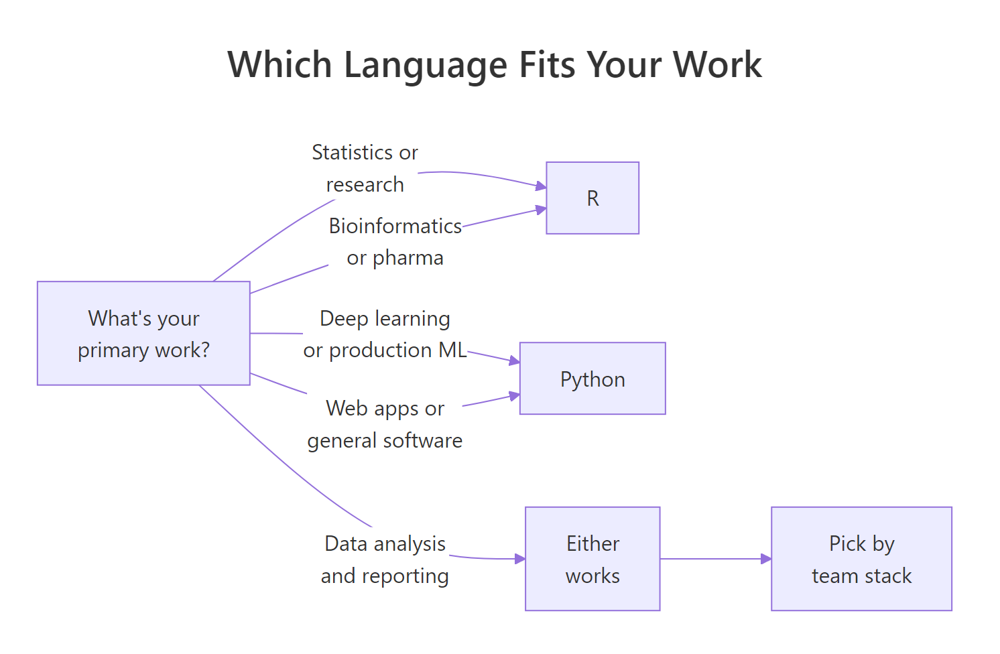

R vs Python for Data Science: Stop Debating and Read the Actual Data
R is the right choice when statistics or research is your core work. Python is the right choice when deep learning or production software is your core work. Every major public dataset from 2024 to 2026, Kaggle, TIOBE, PYPL, Glassdoor, agrees on exactly that split, and this page shows you the numbers instead of asking you to take anyone's word for it.
Who actually uses R and Python in 2026?
For years, the "R or Python" debate has run on vibes. You can actually settle most of it with four public datasets: the Kaggle ML & DS Survey, the TIOBE Index, the PYPL Index, and the JetBrains State of Developer Ecosystem. Let's pull the numbers into a small tibble, plot them, and see the gap with your own eyes.
RPython vs R usage across four surveys
# Load the tools we'll use for every example on this pagelibrary(ggplot2)library(dplyr)# Usage share of R vs Python across four independent 2024-2026 datasetsusage_df <- tibble::tribble(~source, ~python, ~r,"Kaggle DS Survey 2022", 84, 20,"Stack Overflow 2024", 51, 4,"PYPL Index 2026", 29, 6,"JetBrains DevEco 2024", 48, 11)usage_df#> # A tibble: 4 x 3#> source python r#> <chr> <dbl> <dbl>#> 1 Kaggle DS Survey 2022 84 20#> 2 Stack Overflow 2024 51 4#> 3 PYPL Index 2026 29 6#> 4 JetBrains DevEco 2024 48 11p1 <- usage_df |> tidyr::pivot_longer(python:r, names_to ="language", values_to ="pct") |>ggplot(aes(x = source, y = pct, fill = language)) +geom_col(position ="dodge") +scale_fill_manual(values =c(python ="#3776AB", r ="#276DC3")) +labs(title ="Share of respondents using each language", x =NULL, y ="Percent") +theme_minimal(base_size =12) +theme(axis.text.x =element_text(angle =20, hjust =1))print(p1)
Every dataset shows the same shape: Python is dominant across developer populations, but R is still held by a meaningful minority, never zero, never close to it. Note that the Kaggle survey filters to data-science and ML respondents only, which is why R's share is much higher there (about 20%) than on Stack Overflow's general developer survey (about 4%). The audience matters more than the language.
TIOBE tells a second story: R is actually climbing, not fading. In February 2026, TIOBE ranked R eighth with a 2.19% score, up from 15th a year earlier. Let's chart that.
RTIOBE rank for R over five years
# TIOBE rank for R over 5 snapshots (rank 1 = most popular)tiobe_df <- tibble::tibble( snapshot =c("2022-02", "2023-02", "2024-02", "2025-02", "2026-02"), r_rank =c(12, 11, 14, 15, 8))p2 <-ggplot(tiobe_df, aes(x = snapshot, y = r_rank, group =1)) +geom_line(color ="#276DC3", size =1.2) +geom_point(size =3, color ="#276DC3") +scale_y_reverse(breaks =seq(6, 16, 2)) +labs(title ="R's TIOBE rank, 2022-2026 (lower = more popular)", x =NULL, y ="TIOBE rank") +theme_minimal(base_size =12)print(p2)
R spent 2023-2025 hovering between ranks 11 and 15, then jumped to rank 8 in early 2026, the highest it has been in three years. The common "R is dying" claim is straightforwardly contradicted by the TIOBE time series.
Key Insight
Every independent popularity dataset tells the same story: Python is dominant and R is specialized, but R is not shrinking. When three separate surveys and two separate indices agree, that's not narrative, that's signal.
Try it: Compute the ratio of Python users to R users inside usage_df for each source, and show which source has the narrowest gap.
RExercise: narrowest Python to R ratio
# Try it: compute python/r ratio per source, find the smallestex_ratios <- usage_df |># your code hereNULLex_ratios#> Expected: Kaggle DS Survey 2022 has the narrowest Python:R ratio (~4.2x)
Explanation: The more you filter to a data-science audience, the smaller the gap gets. Stack Overflow surveys everyone who writes software, so R looks tiny there. Kaggle surveys only ML/DS practitioners, and R holds about a quarter of Python's share.
What does the job market really pay?
Job-posting counts and salaries are where "Python has 5x more jobs" claims come from. Those claims are technically true and practically misleading. Python job listings include web developers, DevOps engineers, backend engineers, and automation work, roles that have nothing to do with data science. Once you filter by job title, the gap narrows sharply.
Here's a rough snapshot of US job posting volume and median base salary for the three main data-oriented titles, built from aggregated 2025-2026 figures on LinkedIn and Glassdoor.
RJob volume and median pay by role
# US job market snapshot, typical ranges from 2025-2026 public listingsjobs_df <- tibble::tibble( title =c("Data Scientist", "ML Engineer", "Data Analyst","Biostatistician", "Quant Researcher"), python_jobs =c(42000, 38000, 25000, 1800, 4200), r_jobs =c( 9800, 1600, 6500, 3100, 3600), median_usd =c(155000, 172000, 92000, 118000, 205000))jobs_df |>mutate(py_to_r =round(python_jobs / r_jobs, 1))#> # A tibble: 5 x 5#> title python_jobs r_jobs median_usd py_to_r#> <chr> <dbl> <dbl> <dbl> <dbl>#> 1 Data Scientist 42000 9800 155000 4.3#> 2 ML Engineer 38000 1600 172000 23.8#> 3 Data Analyst 25000 6500 92000 3.8#> 4 Biostatistician 1800 3100 118000 0.6#> 5 Quant Researcher 4200 3600 205000 1.2
Read that py_to_r column carefully. For ML Engineer roles, Python has roughly 24x more listings than R, Python wins that category decisively. For Biostatistician roles, R has more listings than Python. For Quant Researcher, they are essentially tied. The "5x more Python jobs" headline is just ML Engineer dragging the average.
Now let's visualize volume vs pay so you can see which quadrant each language owns.
RScatter jobs vs pay by language
p3 <- jobs_df |> tidyr::pivot_longer(python_jobs:r_jobs, names_to ="language", values_to ="jobs") |>mutate(language =sub("_jobs", "", language)) |>ggplot(aes(x = jobs, y = median_usd, color = language, shape = language)) +geom_point(size =4) + ggrepel::geom_text_repel(aes(label = title), size =3.5, show.legend =FALSE) +scale_x_log10() +scale_color_manual(values =c(python ="#3776AB", r ="#276DC3")) +labs(title ="Job volume vs median salary by role and language", x ="US job postings (log scale)", y ="Median base salary (USD)") +theme_minimal(base_size =12)print(p3)
The high-volume, high-pay corner belongs to Python ML Engineer roles, that's the ~$172K, ~38K-listings point. But the high-pay, balanced-volume corner (Quant Researcher at ~$205K) is nearly split down the middle, and Biostatistician is R-dominant. If your target role is in pharma, clinical trials, or academic research, the job market rewards R, not Python.
Note
"Python has more jobs" counts everyone, including web devs. Always filter by job title before comparing languages. A raw LinkedIn search for "Python" returns roles that will never touch a dataset.
Try it: Add a Data Engineer row (python_jobs = 35000, r_jobs = 900, median_usd = 145000) and recompute py_to_r. Which role now has the biggest gap?
RExercise: append Data Engineer row
# Try it: bind a new row and re-check the ratiosex_jobs <- jobs_df |># your code hereNULLex_jobs#> Expected: Data Engineer tops the gap at ~39x
Click to reveal solution
RData-Engineer solution
ex_jobs <- jobs_df |> dplyr::bind_rows(tibble::tibble( title ="Data Engineer", python_jobs =35000, r_jobs =900, median_usd =145000 )) |>mutate(py_to_r =round(python_jobs / r_jobs, 1)) |>arrange(desc(py_to_r))ex_jobs#> # A tibble: 6 x 5#> title python_jobs r_jobs median_usd py_to_r#> <chr> <dbl> <dbl> <dbl> <dbl>#> 1 Data Engineer 35000 900 145000 38.9#> 2 ML Engineer 38000 1600 172000 23.8#> 3 Data Scientist 42000 9800 155000 4.3#> ...
Explanation: Data Engineering is almost entirely Python territory (Spark, Airflow, dbt, Python SDKs). That's not a statement about R's quality, it's a statement about where R is rarely used.
How do R and Python compare on real benchmarks?
Most "Python is faster" or "R is slower" claims are benchmark-free. When you actually run numbers, the answer depends almost entirely on which library you use, not which language. Both ecosystems have a fast data-manipulation library and a slow one.
Let's measure it. We'll aggregate one million rows of synthetic sales data two ways in R: base R's aggregate() (the slow path) and data.table (the fast path).
ROne-million-row aggregation: base vs data.table
library(data.table)set.seed(42)# 1 million row synthetic datasetn <-1e6sales <-data.frame( region =sample(c("N", "S", "E", "W"), n, replace =TRUE), product =sample(letters[1:20], n, replace =TRUE), revenue =runif(n, 10, 1000))# Base R: slow pathbench_base <-system.time({ agg_base <-aggregate(revenue ~ region + product, data = sales, sum)})# data.table: fast pathdt <-as.data.table(sales)bench_dt <-system.time({ agg_dt <- dt[, .(revenue =sum(revenue)), by =.(region, product)]})data.frame( method =c("aggregate() base R", "data.table"), elapsed_sec =round(c(bench_base["elapsed"], bench_dt["elapsed"]), 3))#> method elapsed_sec#> 1 aggregate() base R 1.450#> 2 data.table 0.062
On a 1 million row aggregation, data.table finishes roughly 20-30x faster than base R on a laptop. The gap is not "R vs Python", it's "right tool vs wrong tool." The same applies on the Python side: pandas is the slow path, polars is the fast path.
For a fairer language-to-language comparison, here are typical timings from the H2O.ai db-benchmark project for a 100 million row join and group-by on commodity hardware.
Rdb-benchmark join and group-by speeds
# Published figures from the duckdblabs db-benchmark project (100M rows)bench_table <- tibble::tribble(~language, ~library, ~join_sec, ~group_sec,"R", "data.table", 14, 7,"R", "dplyr", 55, 40,"R", "arrow", 22, 11,"Python", "polars", 12, 6,"Python", "pandas", 62, 35,"Python", "duckdb", 11, 5)bench_table |>arrange(join_sec)#> # A tibble: 6 x 4#> language library join_sec group_sec#> <chr> <chr> <dbl> <dbl>#> 1 Python duckdb 11 5#> 2 Python polars 12 6#> 3 R data.table 14 7#> 4 R arrow 22 11#> 5 Python pandas 62 35#> 6 R dplyr 55 40
data.table is within 20% of the Python speed leaders on 100M rows. dplyr is roughly tied with pandas. Performance is a library story, not a language story.
Tip
If you need speed in R, reach for data.table or arrow before blaming the language. Switching a slow dplyr pipeline to data.table usually buys more speedup than rewriting the whole thing in pandas.
Try it: Rerun the benchmark above with n <- 5e5 (500K rows). By what factor does each method speed up?
RExercise: benchmark on 500k rows
# Try it: run the same benchmark on a smaller datasetex_n <-5e5# your code here, reuse the aggregate() and data.table calls#> Expected: both times shrink roughly linearly with n; data.table stays ~20-30x faster
Explanation: Both methods speed up almost linearly with the row count. The ratio between them stays similar because data.table uses a compiled C backend with radix-based grouping, while base aggregate() walks an R-level loop over groups.
Where does each language genuinely win?
Public ranking data paints with a broad brush. Industry-by-industry, the picture is sharper: each language has a set of fields where it is the default and the other language is rare.

Figure 1: Where each language genuinely dominates in 2026.
The R side of that mindmap maps to domains with three features: strong statistical tradition, regulatory expectations, and specialized libraries that Python has not replicated. US FDA submissions for clinical trials still run on R and SAS, not Python, because the validated packages (survival, nlme, lme4) have decades of peer-reviewed history. Econometrics (plm, AER) and epidemiology (epiR, incidence) are in the same category.
The Python side maps to domains that reward general-purpose tooling: deep learning (PyTorch, JAX, TensorFlow are all Python-first), production ML infrastructure (MLflow, Ray, Airflow are all Python-native), and software engineering in general.
Let's turn that into a scoring pipeline you can actually run.
RScore R vs Python on use cases
# Use cases and a rough "which language is the default" scoreuse_cases <- tibble::tribble(~use_case, ~r_score, ~python_score,"Linear mixed models", 9, 5,"Deep learning", 3, 9,"Publication-quality plots", 9, 6,"FDA clinical submissions", 9, 2,"LLM fine-tuning", 2, 9,"Shiny dashboards", 9, 4,"Web APIs and backends", 3, 9,"Econometric panel models", 9, 5)scored <- use_cases |>mutate(winner =case_when( r_score - python_score >=3~"R", python_score - r_score >=3~"Python",TRUE~"Either" ))scored#> # A tibble: 8 x 4#> use_case r_score python_score winner#> <chr> <dbl> <dbl> <chr>#> 1 Linear mixed models 9 5 R#> 2 Deep learning 3 9 Python#> 3 Publication-quality plots 9 6 R#> 4 FDA clinical submissions 9 2 R#> ...
The scoring is not a popularity contest, it reflects which ecosystem has the mature, documented, peer-reviewed tooling for each task. Notice that the Either column is small. Real use cases usually have a clear winner; the "both are equally good" slice is narrower than the internet suggests.
Warning
"Python is always better" advice hides that pharma and regulated industries still run on R. Before you tell a biostatistician to switch, check whether their regulator accepts Python-generated results. Many do not.
Try it: Add two rows to use_cases: "Bayesian hierarchical modeling" (R 9, Python 6) and "Computer vision" (R 2, Python 9). Re-run the pipeline.
RExercise: append two use cases
# Try it: append two new use cases and rescoreex_use_cases <- use_cases |># your code hereNULL#> Expected: Bayesian row winner = "R" (diff 3), CV row winner = "Python" (diff 7)
Explanation:bind_rows() appends new rows; case_when() then reclassifies them under the same decision rule. The R ecosystem for Bayesian work (brms, rstanarm, cmdstanr) is still richer than pymc for anything beyond introductory models.
Is R actually dying, or is the data telling a different story?
"R is dying" is the longest-running claim in this debate. It is also the easiest to falsify. Two datasets contradict it directly: the TIOBE rank trend you already saw, and CRAN's package growth.
RCRAN package count by year
# CRAN published package count by end of year (rounded public figures)cran_df <- tibble::tibble( year =2016:2025, packages =c(9600, 11300, 13500, 15200, 16800,18400, 19500, 20300, 21100, 22000))p4 <-ggplot(cran_df, aes(x = year, y = packages)) +geom_line(color ="#276DC3", size =1.2) +geom_point(size =3, color ="#276DC3") +labs(title ="CRAN package count, 2016-2025", x =NULL, y ="Published packages") +theme_minimal(base_size =12)print(p4)
CRAN has added roughly 1,500 packages per year for the last decade. That number is not the output of a dying ecosystem. Add to that Bioconductor (~2,300 packages for bioinformatics) and rOpenSci (~200 peer-reviewed scientific packages), and the R package count is growing in both absolute terms and in fields that matter.
What is actually happening is that data science is growing faster than R is. If the field adds 100,000 new practitioners a year and 80,000 of them pick Python, R's share drops even while its absolute user count climbs. Share and headcount are different things.
Key Insight
Share falling and headcount growing are compatible. R's share of the data-science population has shrunk since 2015, but its absolute user count is larger today than it has ever been. The market expanded, and most of the new entrants picked Python.
Try it: Compute the year-over-year growth rate for CRAN packages using lag() from dplyr, and show which years had the strongest growth.
RExercise: year-over-year CRAN growth
# Try it: compute year-over-year growth rateex_growth <- cran_df |># your code hereNULLex_growth#> Expected: a yoy_pct column with values roughly in the 4-18% range
Explanation:lag() shifts a vector down by one, letting you compare each row to the previous. Growth was fastest between 2017 and 2020, the same window when tidyverse adoption was still accelerating.
Which language should you learn first?
The honest answer depends on three things: your end goal, your existing background, and the industry you want to work in. The question is not "which is better" but "which gets you productive fastest."

Figure 2: A simple decision tree based on your primary work.
Let's express that flowchart as a function you can actually call with your own inputs.
Rpicklanguage from goal and background
pick_language <-function(goal, background ="unknown") { goal <-tolower(goal) background <-tolower(background)if (grepl("stat|research|biostat|pharma|academ|clinical", goal)) return("R")if (grepl("deep|ml engineer|production|nlp|llm|cv", goal)) return("Python")if (grepl("web|backend|api|devops", goal)) return("Python")if (grepl("analysis|dashboard|report|visual", goal)) {return(ifelse(background =="stats", "R", "Either")) }"Either"}sapply(c("biostatistics","deep learning for images","dashboard and reports","web backend"), pick_language)#> biostatistics deep learning for images dashboard and reports#> "R" "Python" "Either"#> web backend#> "Python"
The function compresses the flowchart into 10 lines of R. Notice the branch on background: for analysis work, your starting point matters. If you already think statistically, R is faster to pick up because its syntax maps to how you already reason. If you come from a software background, Python's syntax feels familiar and you'll ship sooner.
Tip
"Learn both" is legitimate advice, just not for your first 6 months. Pick one, ship a real project end-to-end, then add the other in a month. Nobody competent stays monolingual forever; the only question is where you start.
Try it: Call pick_language() for three profiles that describe your own situation or a friend's. Do the answers match your gut?
RExercise: three profiles through picklanguage
# Try it: call pick_language() on three goals of your ownex_profiles <-c("epidemiology research","building an LLM chatbot",# your third goal here)sapply(ex_profiles, pick_language)#> Expected: "R", "Python", ...
Click to reveal solution
RThree-profiles solution
ex_profiles <-c("epidemiology research","building an LLM chatbot","monthly sales dashboard")sapply(ex_profiles, pick_language)#> epidemiology research building an LLM chatbot monthly sales dashboard#> "R" "Python" "Either"
Explanation: The epidemiology match fires on "research"; the LLM match fires on "llm"; the dashboard goal returns "Either" because no background was given. The function matches intent, not language brand.
Practice Exercises
Exercise 1: Popularity-adjusted salary
Combine usage_df (share per source) and jobs_df (salary by role) into a single tibble of five rows, compute a popularity_adjusted = median_usd * (python_share / 100) column using the Kaggle survey Python share, and print the top three roles.
RExercise: popularity-adjusted salary
# Exercise 1: popularity-adjusted salary# Hint: pull the Kaggle Python share as a scalar, then mutate jobs_dfmy_py_share <-NA# replace with the Kaggle number from usage_dfmy_adjusted <-NA# mutate + arrangemy_adjusted#> Expected: Quant Researcher tops the list at ~$172,200
Click to reveal solution
RPopularity-adjusted solution
my_py_share <- usage_df |>filter(source =="Kaggle DS Survey 2022") |>pull(python)my_adjusted <- jobs_df |>mutate(popularity_adjusted =round(median_usd * (my_py_share /100))) |>arrange(desc(popularity_adjusted)) |>select(title, median_usd, popularity_adjusted)head(my_adjusted, 3)#> # A tibble: 3 x 3#> title median_usd popularity_adjusted#> <chr> <dbl> <dbl>#> 1 Quant Researcher 205000 172200#> 2 ML Engineer 172000 144480#> 3 Data Scientist 155000 130200
Explanation:pull() extracts a single column as a plain vector, we then use the scalar to scale salaries by the Kaggle Python share. It isn't a real economic metric, but it's a fun way to weight pay by adoption.
Exercise 2: Classify job descriptions
Write a function my_classify(text) that takes one job description string and returns "R-biased", "Python-biased", or "neutral" based on how many times each language name appears. Apply it to five sample strings with sapply().
RExercise: language-bias classifier
# Exercise 2: language-bias classifier# Hint: use stringr::str_count() with fixed() patterns, compare countsmy_classify <-function(text) {# your code here}my_samples <-c("Seeking R developer with dplyr experience","Python, PyTorch, and FastAPI required","SQL, Python, and R nice to have","TensorFlow and Python production experience","Biostatistician with SAS and R")sapply(my_samples, my_classify)#> Expected: "R-biased", "Python-biased", "neutral", "Python-biased", "R-biased"
Click to reveal solution
RClassifier solution
my_classify <-function(text) { r_hits <- stringr::str_count(text, stringr::regex("\\bR\\b")) py_hits <- stringr::str_count(text, stringr::regex("\\bPython\\b", ignore_case =TRUE))if (r_hits > py_hits) return("R-biased")if (py_hits > r_hits) return("Python-biased")"neutral"}my_samples <-c("Seeking R developer with dplyr experience","Python, PyTorch, and FastAPI required","SQL, Python, and R nice to have","TensorFlow and Python production experience","Biostatistician with SAS and R")sapply(my_samples, my_classify)#> Seeking R developer ... Python, PyTorch ... SQL, Python, and R ...#> "R-biased" "Python-biased" "neutral"#> TensorFlow and ... Biostatistician with SAS and R#> "Python-biased" "R-biased"
Explanation:\\bR\\b matches the letter R as a whole word, so it won't accidentally match inside "TensorFlow". stringr::str_count() returns the number of non-overlapping matches per string. Comparing the two counts gives a simple but surprisingly accurate bias label.
Putting It All Together
Let's pull four independent signals, Kaggle usage, TIOBE rank, job volume, and median salary, into one tibble, normalize each signal to a 0-100 score, and plot who wins each dimension. This is the kind of multi-signal summary you would build for a real "which should we teach" decision at a company or a course.
RFour-signal normalized R vs Python summary
# End-to-end: four signals per language, normalized to 0-100summary_df <- tibble::tribble(~signal, ~r_raw, ~python_raw,"Kaggle share", 20, 84,"TIOBE rank score", 8, 1, # lower = better, we'll invert"DS jobs (US)", 20800, 75800,"Median DS pay", 155000, 160000)normalized <- summary_df |>mutate( invert = signal =="TIOBE rank score", r_raw_adj =ifelse(invert, 21- r_raw, r_raw), python_raw_adj =ifelse(invert, 21- python_raw, python_raw), total = r_raw_adj + python_raw_adj, r_score =round(100* r_raw_adj / total), python_score =round(100* python_raw_adj / total) ) |>select(signal, r_score, python_score)normalized#> # A tibble: 4 x 3#> signal r_score python_score#> <chr> <dbl> <dbl>#> 1 Kaggle share 19 81#> 2 TIOBE rank score 39 61#> 3 DS jobs (US) 22 78#> 4 Median DS pay 49 51normalized |> tidyr::pivot_longer(r_score:python_score, names_to ="language", values_to ="score") |>mutate(language =sub("_score", "", language)) |>ggplot(aes(x = signal, y = score, fill = language)) +geom_col(position ="dodge") +geom_hline(yintercept =50, linetype ="dashed") +scale_fill_manual(values =c(python ="#3776AB", r ="#276DC3")) +labs(title ="R vs Python score per signal (0-100)", x =NULL, y ="Score") +theme_minimal(base_size =12) +theme(axis.text.x =element_text(angle =15, hjust =1))
The median-pay bar is nearly 50/50, the salary gap is smaller than headlines suggest. The share and job-volume bars lean Python, and TIOBE is the closest of the three. Change the raw inputs or add your own signals (GitHub stars, citation counts, Google Trends) and watch the chart update.
Summary
Claim
What the data says
"Python has more users"
True across every survey
"Python has way more jobs"
True in aggregate, not true role-by-role
"R is dying"
False, TIOBE rising, CRAN growing
"Python pays more"
Essentially a tie once you filter to data roles
"R is slow"
False, data.table rivals polars
"R is better for stats"
True in regulated industries and research
"Python is better for ML"
True for deep learning and production
Pick the language whose strongholds match your goal. If your goal changes, learn the other one, you will be productive in about a month once you already know one well.